Tatuadora · Lajeado-RS
LauraHagg
Ornamental sob medida e freehand, desenhados em cima da anatomia de cada corpo. Atende em Lajeado e passa a temporada em Porto Alegre, São Paulo e Florianópolis.
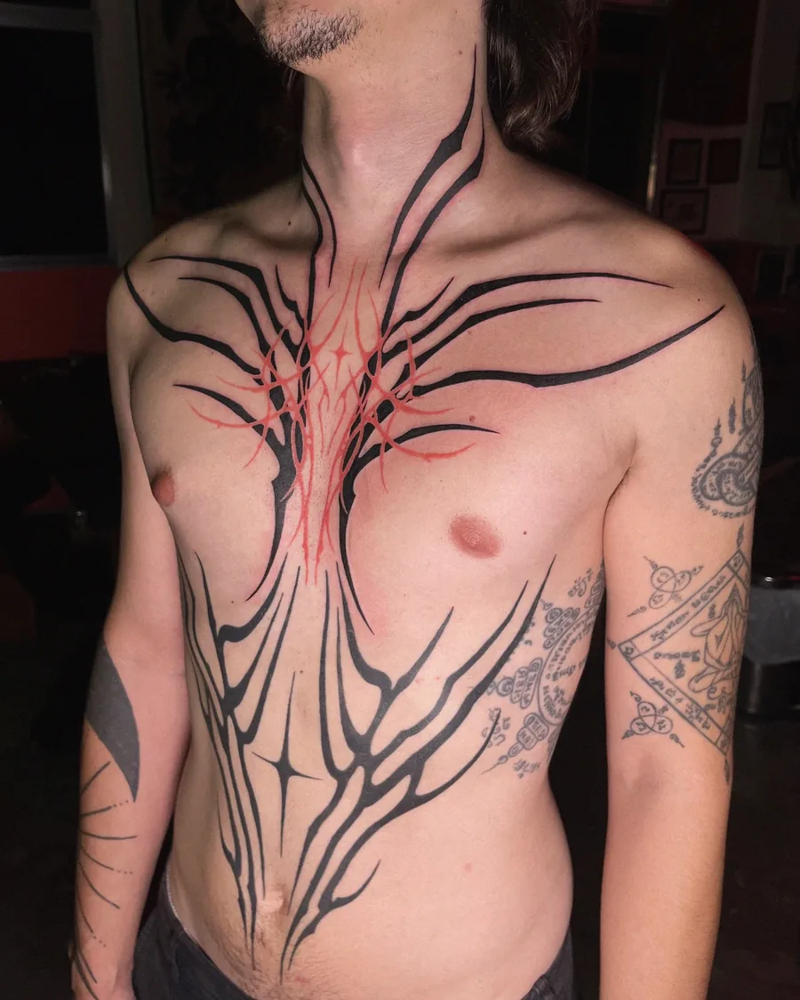
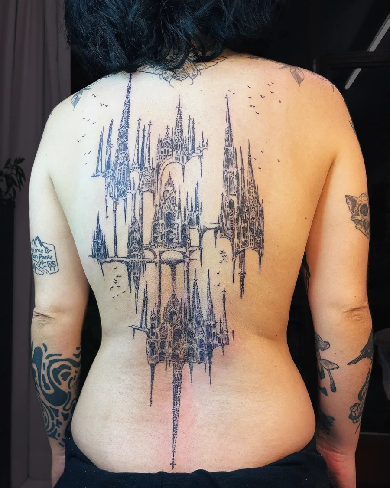
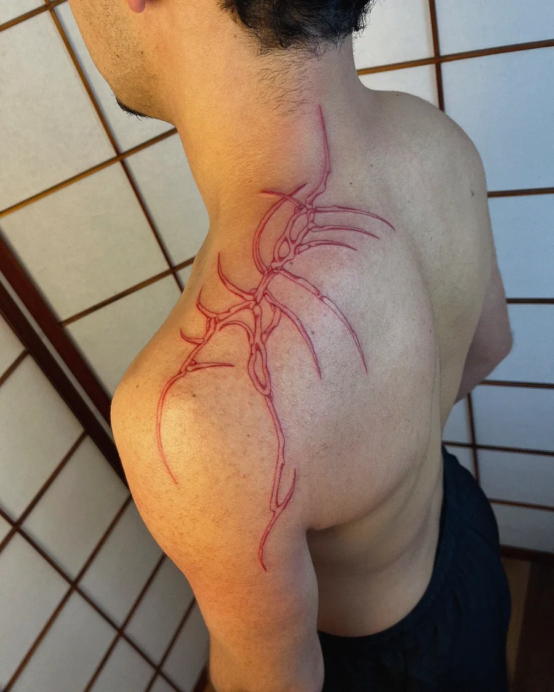
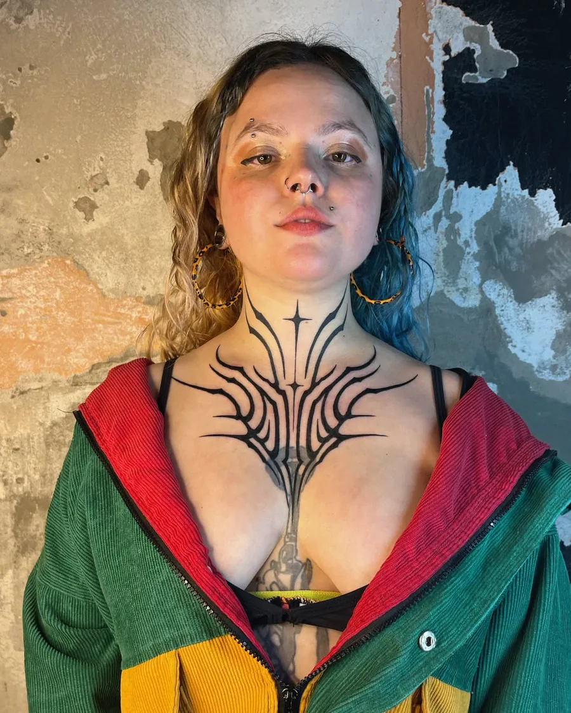
Agenda
As datas abrem por cidade. Garanta o horário falando direto com a Laura.
Datas novas saem primeiro na bio e nos stories do @hagg.tt.
O trabalho
A pesquisa dela está no ornamental e no encaixe anatômico: o desenho nasce pro lugar do corpo, não o contrário.
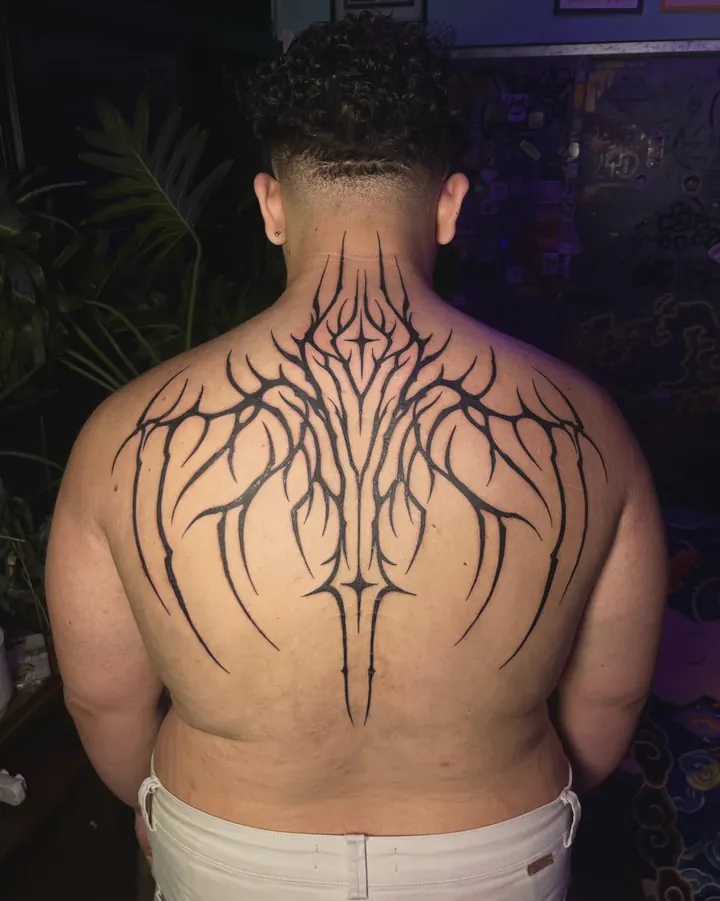
Ornamental sob medida
Simétrico, pensado pra costas, peito, pescoço, lombar e mãos. Linha fina, preto chapado e vermelho.
Freehand
Desenhado direto na pele, seguindo o movimento do músculo. Às vezes mistura um pouco de decalque.
Arquitetura
Catedrais, castelos e a torre de Mordor, em hachura densa que desmancha nas bordas.
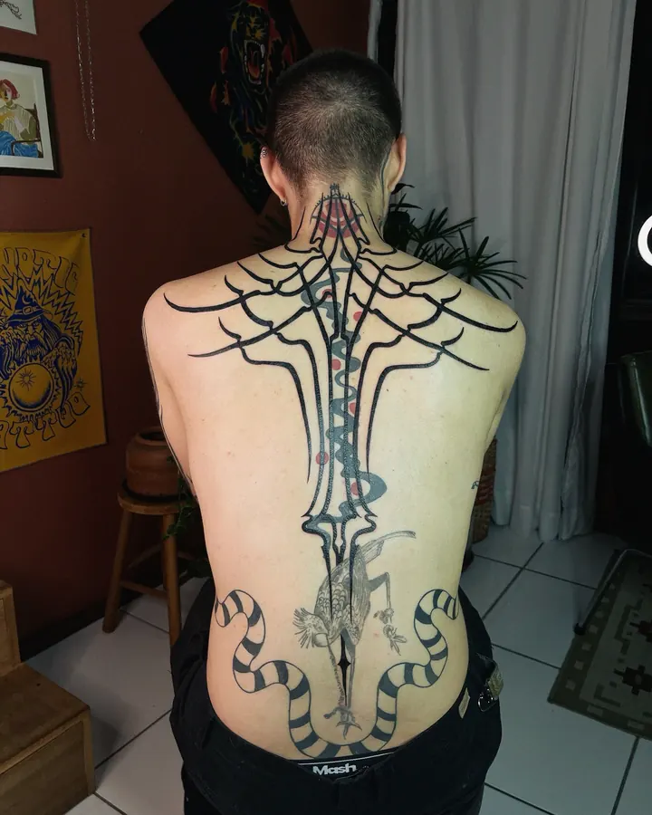
Atropelo e cover-up
Traz o novo sem apagar o que veio antes. Também preenche os espaços vazios entre tattoos.
Portfólio
De 2018 a 2026. Toque numa foto pra ver as outras fotos daquela tattoo.
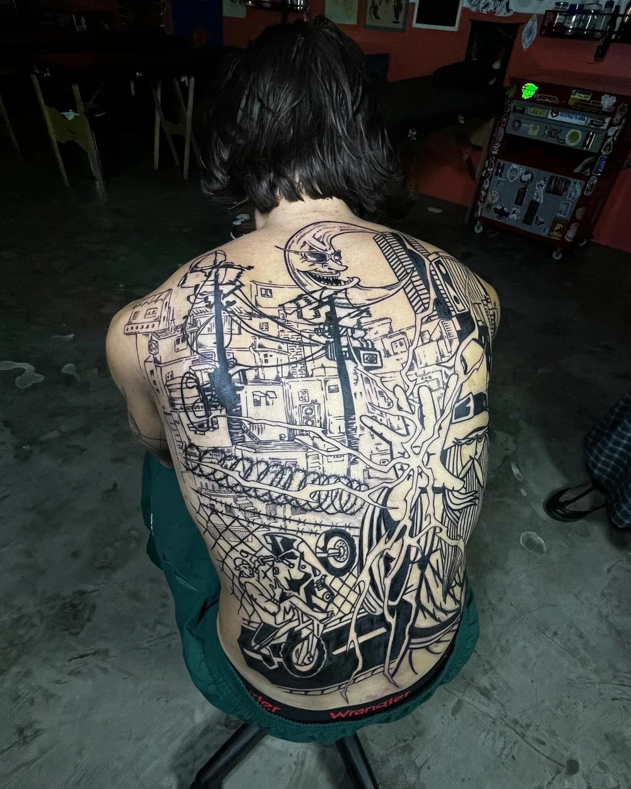
Casa Feia · São Paulo
Fechamento de costas em uma sessão
Nove horas num único dia, a quatro mãos com o @invocad0, no estúdio @cas4feia. O vídeo do processo é o post com mais curtidas do perfil.
Ver o vídeoDisponíveis
Desenhos prontos da Laura, esperando uma pele. Dá pra escolher um e adaptar pro encaixe no seu corpo, como ela costuma fazer.
A lista muda conforme os desenhos são tatuados. A versão atual fica no destaque Disponíveis do Instagram.
Como agendar
- 1
Escolha o ponto de partida
Um dos disponíveis ou a sua ideia. Ela também trabalha em cima de tattoos que você já tem.
- 2
Mande a mensagem
Cidade, lugar do corpo e tamanho aproximado. Foto do lugar ajuda no encaixe.
- 3
Encaixe no dia
O desenho é ajustado no corpo, com decalque, freehand ou os dois.
Faz desenho exclusivo?
Faz. Boa parte do portfólio é arte criada pra pessoa, a partir do corpo dela e da conversa sobre a ideia.
Dá pra cobrir uma tattoo antiga?
Dá. Ela faz cover-up, blast over e atropelo, quando o novo passa por cima sem apagar o antigo.
Faz peças grandes?
Faz. Costas inteiras, peito e quadril saem em uma ou mais sessões. Um fechamento de costas já saiu em um dia só.
Faz escrita?
Não é o foco, mas ela gosta de aplicar e já fez. Conte a ideia na mensagem.
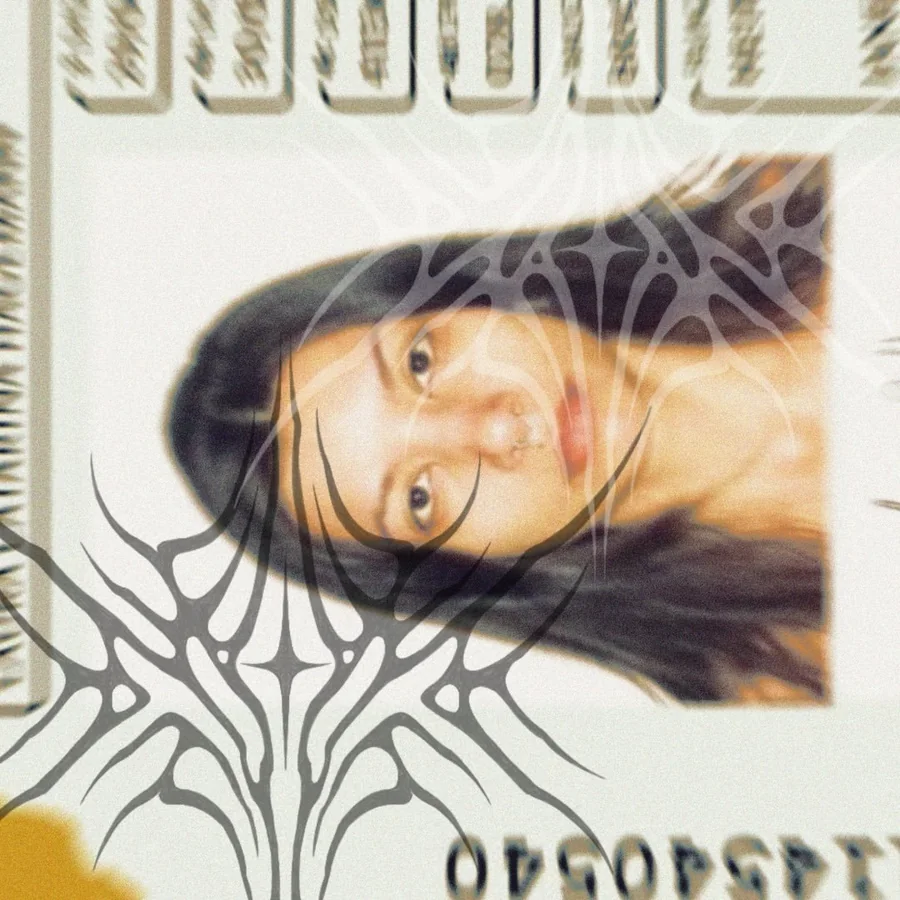
Quem tatua
Laura Hagg, artista de Lajeado, no interior do Rio Grande do Sul.
O primeiro trabalho saiu em 2018, em Florianópolis. Desde então ela circula entre o Sul e São Paulo, onde ajudou a construir o @torttto___ e hoje atende no @cas4feia.
Começou na ilustração, com bichos em hachura e desenho livre, e foi direcionando a pesquisa pro ornamental e pro encaixe anatômico. Ultimamente tem olhado com mais carinho pro que cresce na terra dela: a araucária virou tattoo.
“Eu vejo esse tipo de tatuagem como amuleto. Que ela te cuide e te livre do mal.”
Laura, sobre o Double Face
Além da pele
Pintura em acrílica, bordado à mão e máscaras de cerâmica fria. Aceita encomendas.
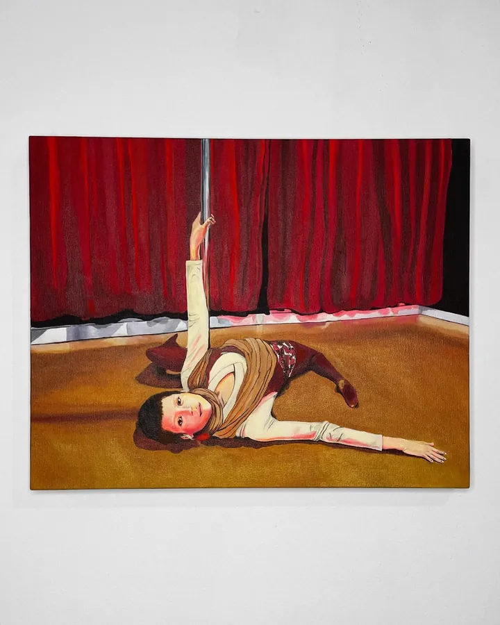
JasmimAcrílica sobre tela
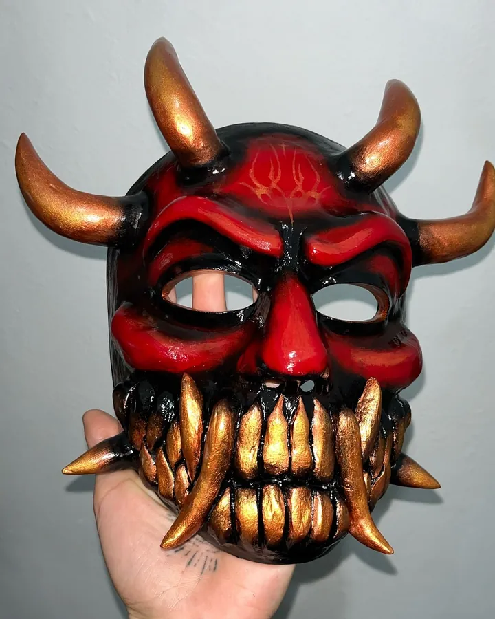
Máscara de vestirCerâmica fria sobre gesso
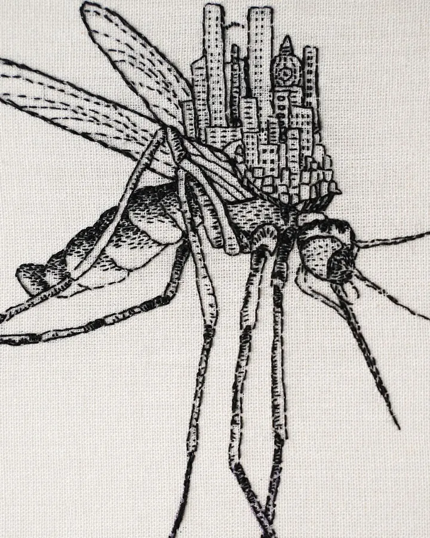
Inseto cosmopolitaBordado à mão
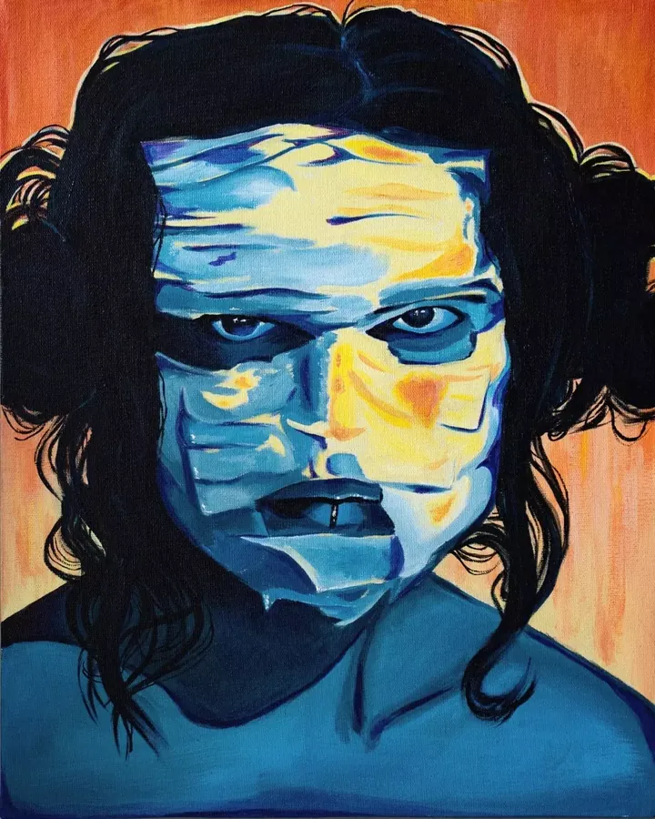
LuizaAcrílica sobre tela
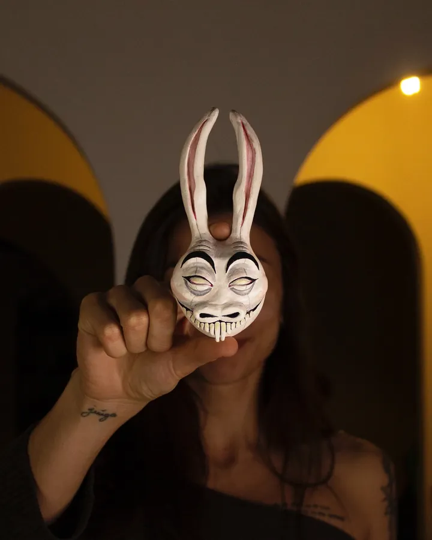
Primeira máscaraCerâmica fria
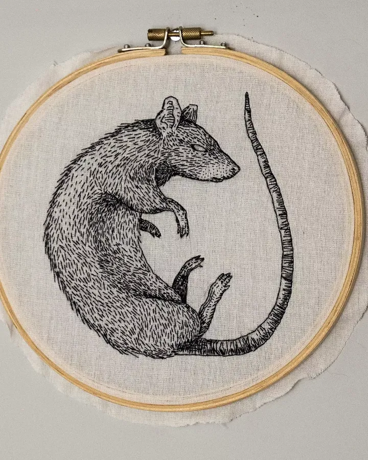
Encomenda pra IslândiaBordado à mão
Por onde passou
Estúdios que receberam a Laura nas temporadas.
Tem um lugar do corpo esperando desenho?
Conte a cidade, o lugar e a ideia. A Laura responde com valor e data.
Pedir orçamento